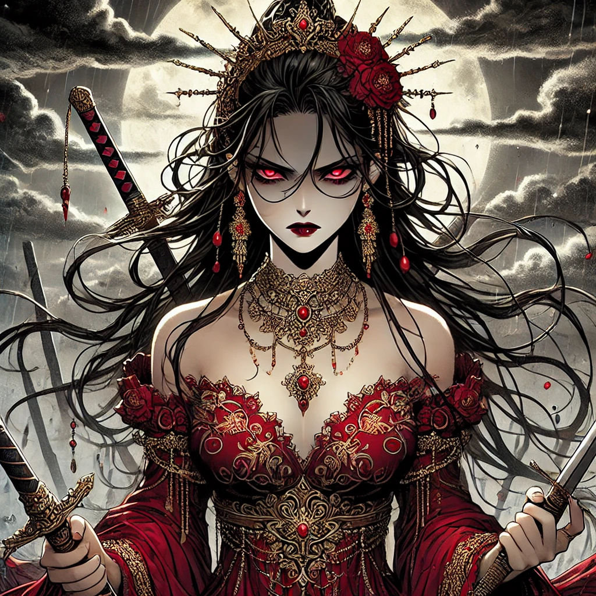
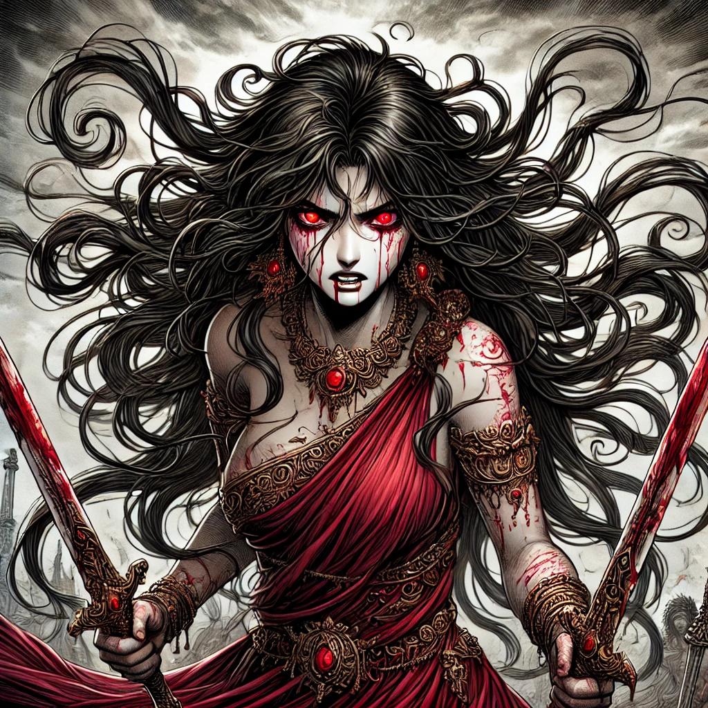
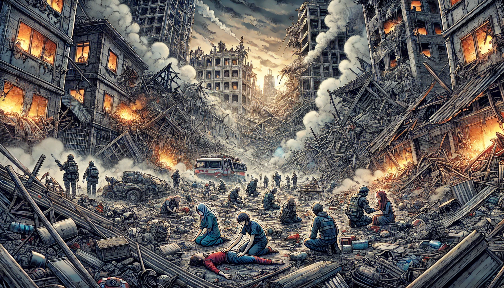
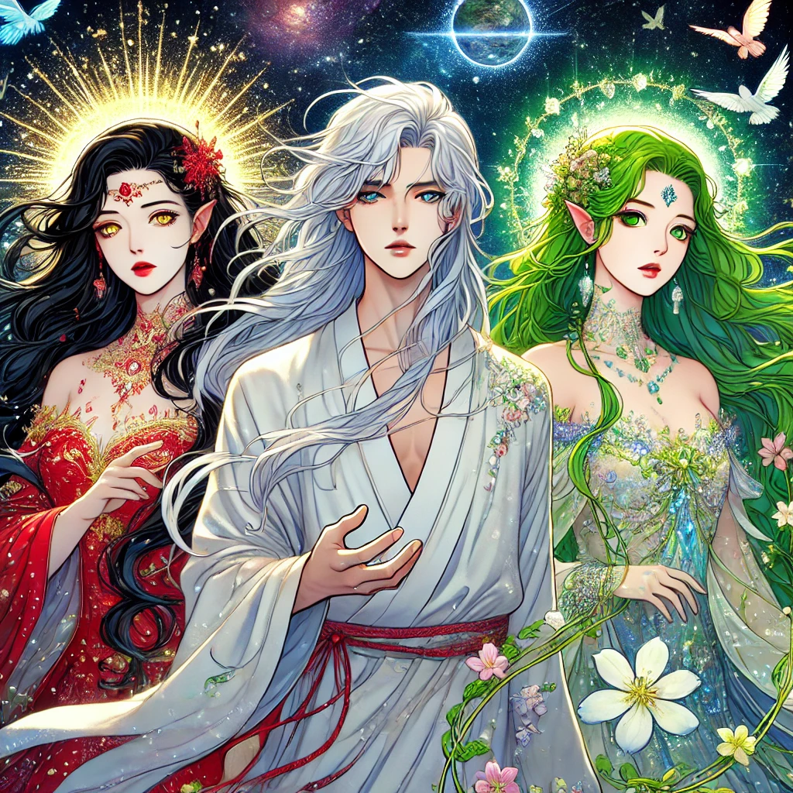
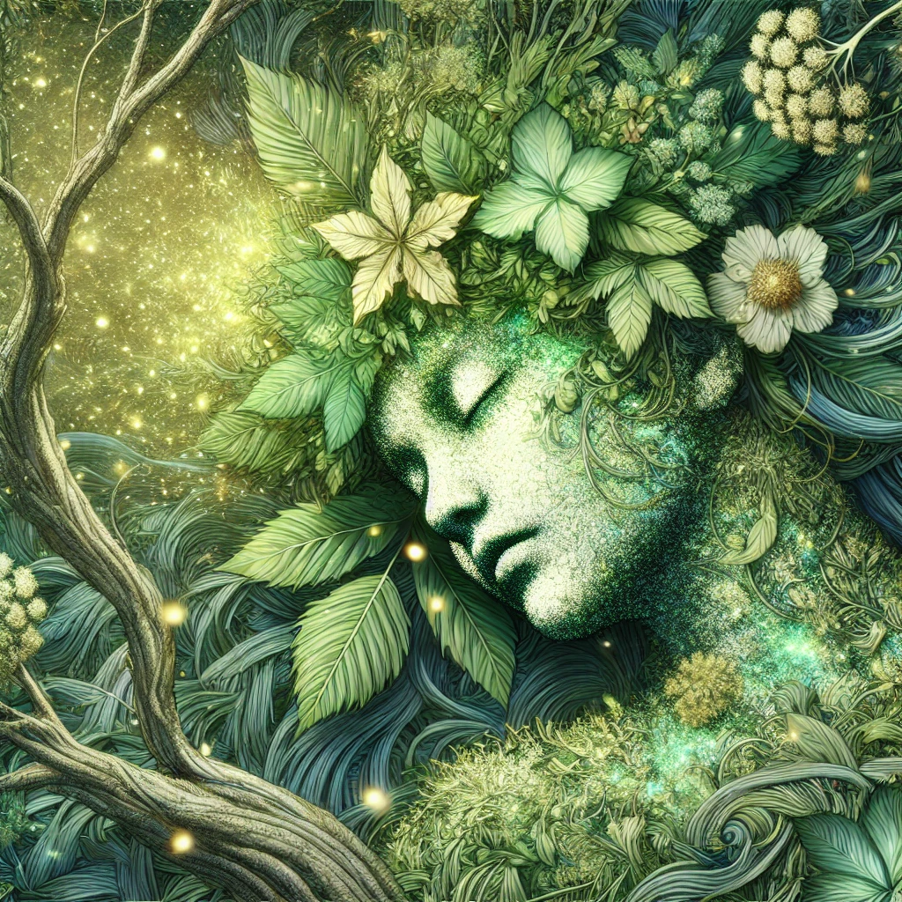
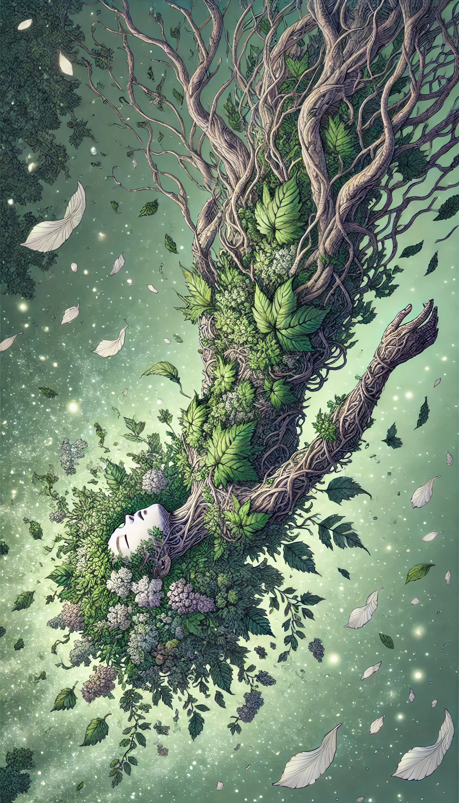

The thugs made a terrible mistake—a mistake so grave that it sealed their fate. They had beaten Sofia so brutally that she succumbed to her pain, slipping away in Rowana’s arms. Rowana held her best friend’s lifeless body, staring at Sofia’s pale face, which, despite the suffering, looked peaceful in death.
A storm began to rise. The skies darkened, thunder roared, and the winds howled as if mourning alongside Rowana. But amidst the chaos, something far more terrifying was awakening. Her rage grew so intense that the very air became suffocating. The transformation began—Rowana’s brown hair darkened into a deep black, her once vibrant green eyes turned blood-red, and a blinding light engulfed her entire body. When the light faded, she stood there, no longer the same. She wore a flowing crimson dress, her hands gripping two gleaming swords. She no longer looked like a mere human—she was divine, yet not a savior. She was death itself.

Her beauty was mesmerizing, but her wrath was paralyzing. A wave of fear swept over everyone present. She was no longer just Rowana—she was an executioner, a force beyond mortal comprehension. Without hesitation, she raised her swords and began her massacre. One by one, the thugs fell, their screams drowned by the howling storm. Blood painted the ground in rivers of red. Terror-stricken children cowered in the corners of the ruined childcare facility, sobbing, unable to comprehend the horrors unfolding before them. But Rowana did not stop. She could not stop.
For the first time, the Creator had found a reason to bring forth destruction through their most beloved child. Rowana was no ordinary mortal—she was chosen, created for a purpose, and now that purpose had been set into motion. The divine power that coursed through her body was not her own. She had become a vessel, a harbinger of judgment, but her mortal body was unprepared for such immense power. Her emotions fueled the energy beyond control, twisting her into a relentless storm of vengeance.

The world trembled as Rowana continued her path of annihilation. Nothing was spared—anyone she deemed corrupt, anyone who had played a part in society’s downfall, was obliterated. Hours passed, but her fury only intensified. Rising into the sky, she gathered all the surrounding energy, her body glowing like a crimson sun. With a final deafening scream, she unleashed a catastrophic blast that engulfed the world.
Seventy percent of the planet was annihilated. Cities crumbled, civilizations ceased to exist, and the land was left in ruins. The survivors, if they could be called that, lay amidst the wreckage—either wounded, buried under debris, or staring in shock at the devastation around them.

Meanwhile, the Gods of Nature and Peace watched in horror. The Creator’s recklessness had unleashed destruction beyond measure, and now they had to act before nothing remained.
Goddess of Creation (Aurelia, The Divine Architect)
Aurelia is the supreme force behind existence, the one who weaves the fabric of reality with her golden touch. With long, flowing black hair and radiant golden eyes, she embodies both power and sorrow—watching over a world that has fallen far from its intended glory. She wears an ethereal crimson dress, shimmering with celestial light, signifying the life force she has bestowed upon creation. Her golden jewelry represents the unbreakable laws of the universe, intricate and divine. While seen as a benevolent goddess, her emotions run deep, for she understands the burden of creation and the destruction that follows when balance is lost.
God of Peace (Elysian, The Tranquil Luminary)
Elysian is the calming force in a world filled with chaos, the embodiment of harmony and serenity. His long, flowing white hair cascades like rivers of moonlight, and his silver eyes reflect infinite wisdom. Draped in a pure white divine robe, he moves with grace, his presence soothing even the most tormented souls. He carries no weapon, for his power lies in his words and his divine aura, which can pacify even the most wrathful spirits. Elysian understands that peace is fragile and must be protected, even if it means making difficult choices. In times of great turmoil, he takes action to restore balance, even when it pains him to do so.
Goddess of Nature (Sylphira, The Verdant Guardian)
Sylphira is the eternal spirit of the natural world, the guardian of life’s endless cycle. Her deep green eyes hold the wisdom of the ages, and her flowing hair, woven from the vines and leaves of sacred forests, shimmers with the colors of the seasons. She wears a multicolored divine dress, constantly shifting like a blooming garden, symbolizing the ever-changing yet eternal force of nature. Her very breath can sprout life, and her hands can mend the wounds of the earth. However, when enraged, she can summon nature’s full wrath—earthquakes, storms, and vines that consume all in their path. She seeks balance, but she knows that destruction is sometimes necessary for new life to flourish.

The God of Peace found the only solution—the cause of Rowana’s wrath had to become the key to stopping her. Taking the form of Sofia, they stood before Rowana’s raging presence. The moment Rowana saw her best friend standing before her, she froze. The power surging from her body weakened. Her crimson eyes softened as tears welled up. With trembling hands, she reached out to touch Sofia’s face, desperate to hold her one last time.

Before she could, the God of Nature intervened, seizing the moment. They channeled pure divine energy into Rowana, neutralizing the darkness consuming her. The surge of power overwhelmed her, and she screamed in agony. White light burst from her eyes, and the raging storm stilled. The skies cleared, purer than they had ever been. Flowers and greenery began sprouting from the barren lands, as the power of nature spread across the devastated world, bringing life back to the ashes.
The survivors stood in awe, unable to decide whether they should mourn or rejoice. But then, something unforeseen occurred.

Rowana’s body began to change. Vines crawled over her skin, wrapping around her arms and legs. Leaves, flowers, and grass enveloped her, lifting her into the sky. She floated above them, suspended by the very essence of nature itself. The divine energies of the gods intertwined, sealing her within a cocoon of life.
And then, silence.
The world had reached its breaking point.
But every end is merely the beginning of something new.
The Creator had no choice but to imprison Rowana in this shell of nature. Her soul had been fractured by the overwhelming power she had wielded, and only time could mend it. To heal, she needed to be encased in the energy of the gods for centuries.
And so, a new era began—one born from destruction and sacrifice.
High above the world, visible from every corner of the land, stood a towering monument—a statue formed from leaves and vines, shaped in the image of Rowana. A silent reminder of the girl who had once carried the world’s faith… and had nearly ended it.
